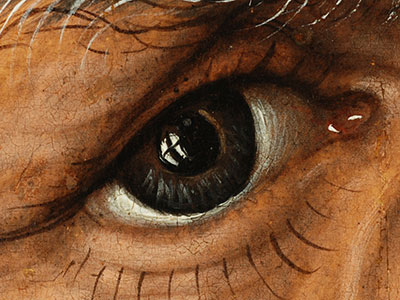
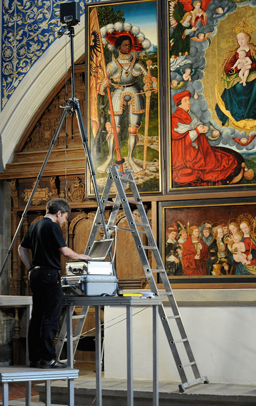
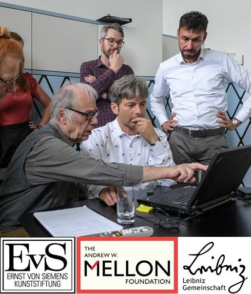
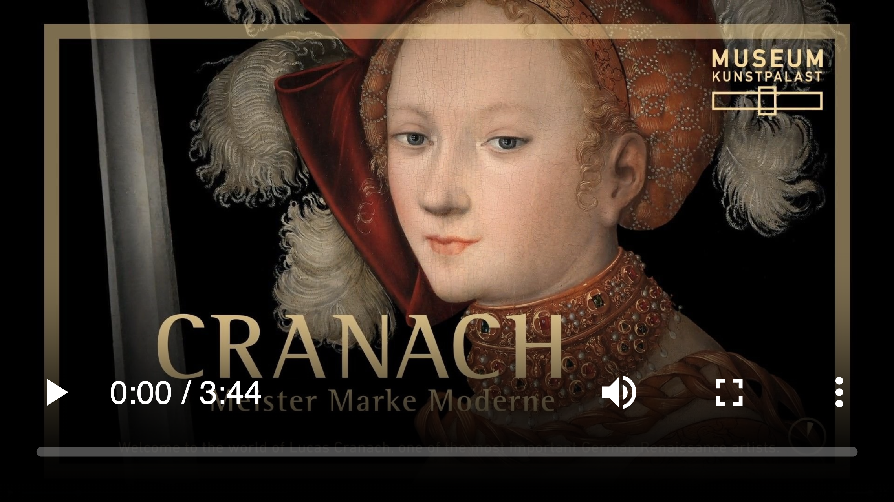
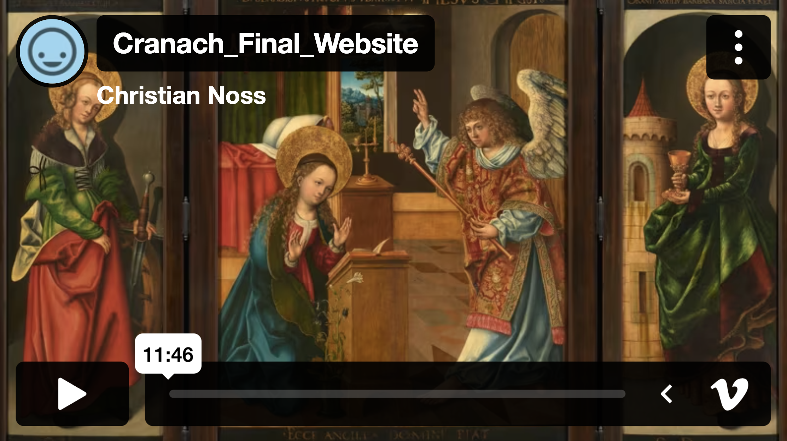
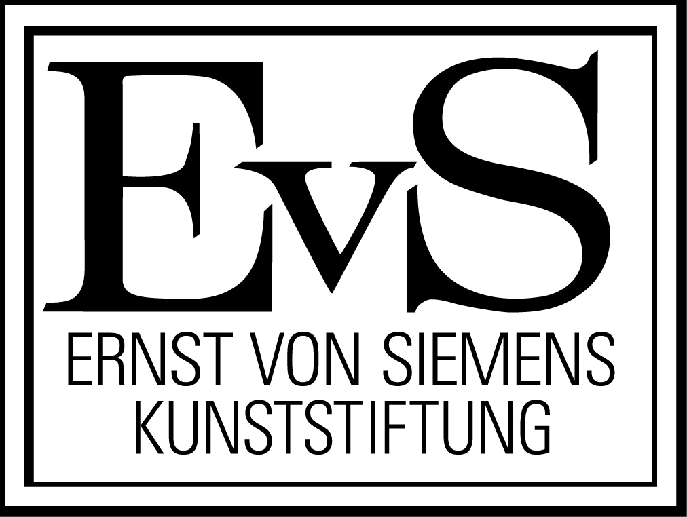
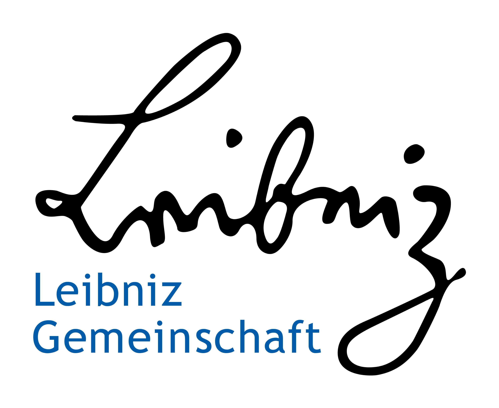

Das Cranach Digital Archive (CDA) ist ein internationales Forschungsprojekt, das sich der Dokumentation und Erforschung der Werke von Lucas Cranach d. Ä. (1472–1553) und seiner Werkstatt widmet. Es bietet eine umfassende digitale Sammlung hochauflösender Bilder, wissenschaftlicher Analysen und historischer Dokumente zu seinen Gemälden. Ziel ist es, Kunsthistorikern, Restauratoren und der Öffentlichkeit einen zentralen Zugang zu detaillierten Informationen über Cranachs Werke zu ermöglichen und den Austausch wissenschaftlicher Erkenntnisse zu fördern.
Gemälde, Archivalien und Literatur
.jpg)

Lucas Cranach d. Ä.
Berühmter Maler der deutschen Renaissance, bekannt für seine Porträts und religiösen Werke.
mehr erfahren
Cranach Werkstatt
Die Werkstatt produzierte zahlreiche Gemälde und Grafiken, oft mit Hilfe von Schülern und Söhnen.
mehr erfahren
Signatur & Symbolik
Die berühmte geflügelte Schlange ist das Markenzeichen Cranachs und findet sich auf vielen Werken.
mehr erfahren
Im Oktober 2009 starteten acht Museen in Europa und den USA gemeinsam mit der Stiftung Museum Kunstpalast Düsseldorf und der TH Köln ein Forschungsprojekt zur digitalen Erschließung der Gemälde von Lucas Cranach d. Ä., seinen Söhnen und der Werkstatt. Gefördert von der Andrew W. Mellon Foundation (2009-2019), zielte es darauf ab, Kunstgeschichte, Kunsttechnologie und Informatik zu verbinden. Die Werke wurden interdisziplinär untersucht und über die Plattform CDA frei zugänglich gemacht. Das Projekt diente der Digitalisierung, Erforschung und Vermittlung neuer Erkenntnisse und unterschied sich von klassischen Werkverzeichnissen durch seinen breiteren Ansatz und interdisziplinäre Methodik
mehr erfahren2.570
Gemälde
1.110
pdf-Dokumente
4.365
Literatur Nachweise
1.340
Archiv-dokumente
1.660
Infrarot-reflekto-gramme
25.050
hoch-auflösende Abbildungen
9.400
Textseiten in DE / EN
800
Röntgen-aufnahmen

Erfahren Sie mehr über Lucas Cranach den Älteren und seine Werkstatt mit:
Lucas Cranach der
Ältere und seine Werkstatt - eine Spurensuche
Unsere Partner
Eine Initiative des Kunstpalasts, Düsseldorf und der Technischen Hochschule Köln in Zusammenarbeit mit über 360 Museen, Forschungseinrichtungen und Kirchengemgemeinden in 35 Ländern.
mehr erfahren
